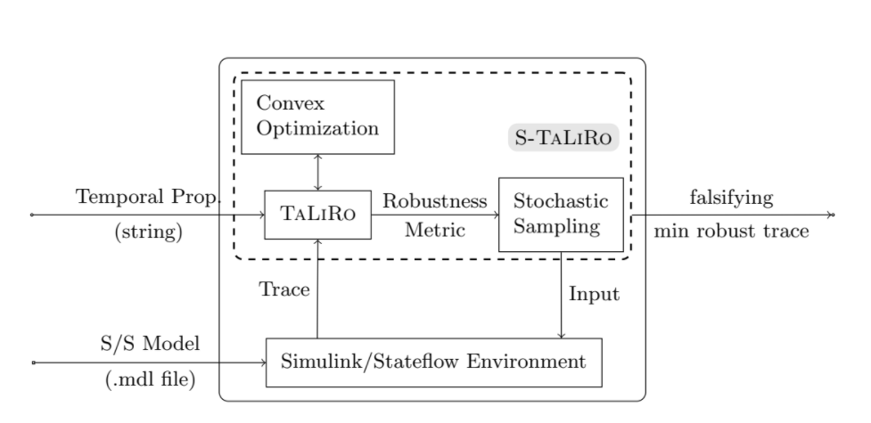
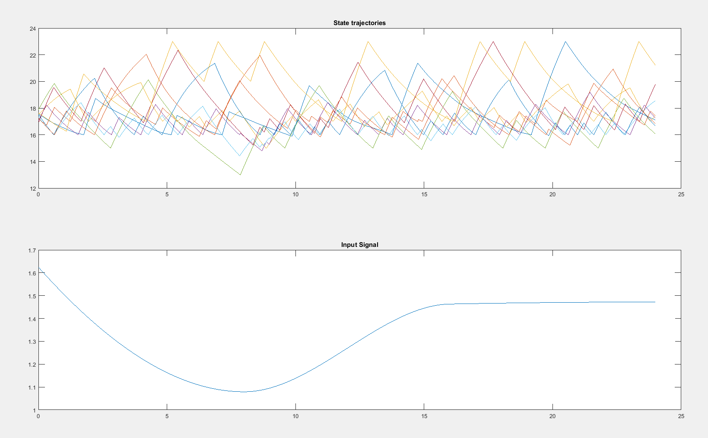

S-TaLiRo
Main contributors of the tool are Georgios Fainekos and Sriram Sankaranarayanan
This tool searches for trajectories of minimal robustness in Simulink/Stateflow. It uses randomized testing based on stochastic optimalization techniques (Monte-Carlo, Ant-Colony optimalization, etc.). It is modular and new stochaistic optimalization algorithms can be easily implemented and integrated.
S-Taliro searches for counterexamples to Metric Temporal Logic (MTL) [1] properties for non-linear hybrid systems. This goal is achieved by previously noted minimization of a robustness metric. To achieve this goal S-Taliro uses either m-functions in Matlab which would describe the system, but preferably Simulink/Stateflow models that can S-Taliro use for simulation under given circumstances.
In it's core S-Taliro uses combination of stochastic sampling together with Simulink simulation runs and a little bit of optimalization. Using this approach, tool finds the smallest robustness which is desirable, because traces with lower robustness value are closer in distance to falsifying traces. If the tool detect a negative robustness we acquire a trace which falsify temporal logic properties. Robustness is calculated by Taliro module, but the computation is based on the results of convex optimalization problems used to compute signed distances. The structure of the tool and it's architecture is describe on this picture: [2]

S-TaLiRo Installation
Installation of S-Taliro is easy, just download the software from Source and run function in file setup_staliro.m in MATLAB. There may be a problem with paths, at least I have faced it on both environments; Linux and Windows. As a hotfix solution I just overwritten the relative paths to absolute path form and marked a note to find more elegant solution (TODO!) in future for my virtual environment which is still under construction.
Another possible problem can be compilation of C++ files, because on Linux I had pre-installed gcc version 7.something.something and recommended gcc version for the files is 4.4.*. Naturally GCC couldn't compile the source code due to some issues with comments or whatsoever. I have also noticed that there is an old version of Matlab 2013, so I switched to Windows where 2017 version of MATLAB is installed. For compilation MATLAB used default MinGW and compilation ran without problems.
After successful installation of S-Taliro tools I started to examine demos.
How to use S-TaLiRo
Prerequisite: Input signals must be provided to the Simulink model through input ports
- Execute S-TaLiRo tool with the name of the Simulink model as parameter.
- Give S-TaLiRo set of initial conditions
- Give S-TaLiRo constraints on the input signals
- Give S-TaLiRo Metric Temporal Logic (MTL) specification
- Select stochaistic optimalization Algorithm (Simulated Annealing, Ant Colony Optimization, Genetic Algorithms and Cross Entropy)
Georgios Fainekos has written S-Taliro quick guide. It explains how should be S-Taliro used, what it can do and how it works. S-Taliro takes a system model (such as Simulink model) and also a set of MTL specifications and calculate different trajectories, experiment on a certain surrounding around the simulation to be able detect robustness. Based on the robustness calculate stochastic optimizations and creates new parameters specification.
Using this approach S-Taliro tries many different runs of the simulation, but with reasonable parameters which are altered in order to enclose as much as possible to real world situations. Robustness is calculated and in case that constraints are violated, witness trajectory is generated.
S-Taliro has a certain requirements on the model, for example input signals has to have a form of input ports. To define specifications authors recommend using output ports. This way S-Taliro treats model as black-box.
There are mentioned two algorithms in the quick guide:
- fw_taliro - based on formula rewriting, suitable for runtime monitoring [3]
- dp_taliro - based on dynamic programming, suitable for offline testing [4]
Room heating benchmark HEAT30
This benchmark model was introduced by Ansgar Fehnker and Franjo Ivanèiæ in paper Benchmarks for Hybrid Systems Verification [5]. Sadly our library has no available copy of this document, though I have requested that library should borrow one.
This model represent 10 rooms and 4 heaters which result in 3 360 discrete locations. The goal for veryfication is to verify that for rooms  up to xn no room temperature drops below [14.50; 14.50; 13.50; 14.00; 13.00; 14.00; 14.00; 13.00; 13.50; 14.00]. The initial conditions are temperatures in range of [17,18]. The input signal was parametrized using a piecewise cubic Hermite interpolating polynomial with 4 control points evenly distributed in the simulation time. Look of the model in Simulink:
up to xn no room temperature drops below [14.50; 14.50; 13.50; 14.00; 13.00; 14.00; 14.00; 13.00; 13.50; 14.00]. The initial conditions are temperatures in range of [17,18]. The input signal was parametrized using a piecewise cubic Hermite interpolating polynomial with 4 control points evenly distributed in the simulation time. Look of the model in Simulink:

When S-Taliro is used to falsify the model, it can run for example for 40 minutes and find a witness Falsifying input signal together with initial conditions and resulting trajectories like in my case when I ran the tool. This is the output:
MTL in S-TaLiRo
In order to run different experiments on different CPS and other real-time systems I need to understand the usage of MTL specification in S-TaLiRo tools. Traditional MTL operators are translated into S-TaLiRo according to this table:
Where:
- G (always), F (eventually) and U (until) are defined within [1]
- X represents "next" and it is equivalent to <>_[1,1]
- W is now P instead and it represents "previous"
- U_[a,b] is the "until" operator with time bounds [a,b]
- R_[a,b] is the "release" operator with time bounds [a,b]
- P_[a,b] is the "previous" operator with time bounds [a,b]. It is equivalent to <.>_[1,1]
- S_[a,b} is the "since" operator with time bounds [a,b}. If no time bounds are required, then use just S
- T_[a,b} is the "trigger" operator (past version of "release") with time bounds [a,b}. If no time bounds are required, then use just T
- <.>_[a,b} is the "eventually in past" (in [1] it was probably P) operator with time bounds [a,b}
- [.]_[a,b} is the "always in past" (in [1] it was H) operator with time bounds [a,b}
For example in the case of Room heating benchmark:
We can see that in the section MTL spec there are 4 lines:
- First line defines the whole phi formula -> a system restriction.
- Second line gives name to the predicate (e.g. p1, a, myPredicate, etc.)
- Preds(i).A and Preds(i).b formulate a constraints of the form Ax <= b see [6]
3rd order Delta-Sigma Modulator
There is another demo based on a model of a 3rd order Delta-Sigma Modulator. The goal here is to find state trajectories that might reach the saturation threshold. In other words, the requirements are that -1 <= x_i <= 1 for i = 1,2,3.
How to specify this in a MTL form and then verify it using S-TaLiRo tools? Well in MTL it is easy. Given that the equation is a formula phi, then simply Ga, because at any time must this restriction hold true. In S-TaLiRo version it would be written as []a. But how to write the restriction itself in S-TaLiRo form of predicates? Let's look on the author's way how to write it down:
As we can see Preds(i).A has six dimensions, each of those has three variables. Indeed it corresponds with the definition of three output variables x_1, x_2 and x_3. On the other line is a definiton of Preds(i).b. It has only six numbers, all ones. It makes sense because we will be using each number for different dimension in Preds(i).A. First two dimensions in Preds(i).A define restrictions about x_1, namely that 1x_1 <= 1 and then -1x_1 <= 1, which converts into x_1 >= -1 which is exactly what we needed. Similarly it goes for x_2 and x_3. I have tested this hypotesis by modifying the Preds(i).b values and behavior of the system confirmed the assumption.
Here is the output of the system state trajectories with the original definition:
And here is the output with my modification of Preds(i).b (all 1 changed to 2):
These screenshots nicely demonstrate how one can change the problem of a model verification by changing constraints.